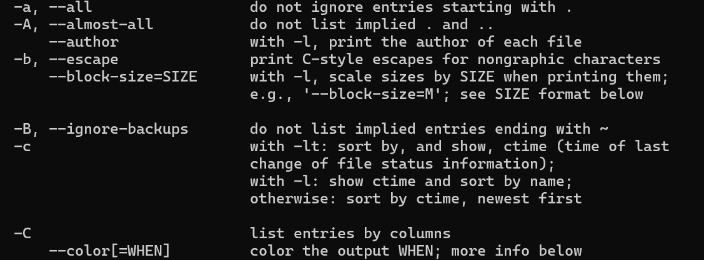

课程概览与shell
约 698 个字 1 张图片 预计阅读时间 2 分钟
导航指令
pwd：显示当前路径
cd ..：返回上一级路径（.表示子节点，..表示父节点）
cd -：返回上一次在的目录，这可以很方便的在两个目录之间来回切换
ls：列出目录下的所有文件
ls --help：列出ls这个指令各种可用的标志和选项的详细说明，通常我们成单个破折号和单个字母的组合为标志（flag），不带任何值的内容也是标志，带有值的组合为选项，比如：
-a、--all都是标志-c、--color都是选项

ls -l：用来显示长列表格式，仍然会打印目录下的所有文件名，还会提供额外信息，前面的文件类型和权限可以一讲：
-
第一个字符表示文件类型：
-
-表示普通文件 d表示目录-
l表示符号连接 -
后九个字符表示用户、组和其他用户的读、写、执行权限
-
每三个字母一组，分别对应所有者（owner），所有者所在组（group），其他用户（others）的权限
-
权限的含义：
权限字符 对于文件 (File) 的含义 对于目录 (Directory) 的含义 r可以读取文件内容 可以列出目录中的文件和子目录（查看目录内容） w可以修改、删除文件内容 可以创建、删除、重命名目录内的文件和子目录 x可以执行该文件（如果它是可执行程序或脚本） 可以进入该目录（cd 到该目录），并访问其下的文件 -没有相应的权限 没有相应的权限
mv：可以用来修改文件名字而不改变文件位置，比如mv dot.md foo.md就是把dot改成了foo
cp：可以用来复制文件，一个是要复制的文件路径，一个是目标路径，两个路径都需要是完整路径
rm：可以用来删除文件，需要提供文件的路径，不能用来删除文件，但是可以用-r标志进行递归删除，这样可以删除路径下的所有内容
rmdir：可以删除一个目录，但只能是空目录。
mkdir：可以用来创建一个新目录，要注意空格，比如mkdir my photos，就会生成两个目录，一个my，一个photo，如果真的想的话。应该用反斜杠转义空格或者引号引起来
man：可以用来查看更多的指令和使用标志，比如man ls就可以看到l所有的标志和选项，和ls --help的区别在于，这个更倾向于阅读的模式
再送一个快捷方式：CTRL+L是清除终端并回到顶部，clear也能实现这个效果